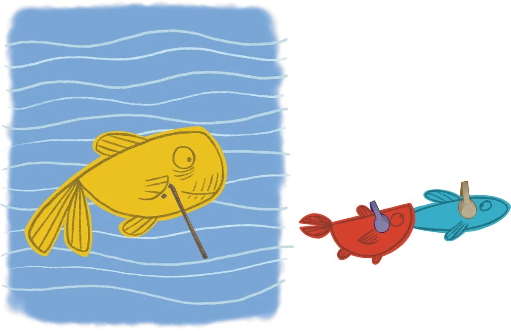

Lo spettacolo
Una lezione di anatomia sulla Repubblica, tenuta da un medico internista con molto da dire e poca voglia di annoiare.
Come funziona
Un medico internista dalla didattica singolare accompagna la platea in una lezione di anatomia che ha per oggetto la Repubblica e i suoi organi: le dinamiche parlamentari, i ruoli e gli attori della vita istituzionale, l'Unione europea.
Il ritmo è quello di una chiacchierata briosa, il linguaggio quello dei ragazzi. Filmati, immagini e suoni accompagnano il racconto, e il pubblico lavora con l'attore: si batte il tempo del cuore con mani e piedi, si sale sul palco, si scopre quanto pesa tenere in allenamento i muscoli della pubblica amministrazione.
Alla fine ragazzi e ragazze hanno un'idea più chiara di come funziona la macchina dello Stato e di perché vale la pena prendersene cura.
- Durata
- Circa un'ora
- Per chi
- Scuole medie e superiori
- In scena
- Ferdinando de Blasio di Palizzi, unico interprete
- Testo
- Ferdinando de Blasio di Palizzi e Michele D'Andrea
- Dal
- 2018, con decine di repliche in Piemonte, Marche, Umbria e Toscana

Cosa serve
Lo spettacolo viaggia leggero. La scuola o il teatro mettono a disposizione:
- impianto di amplificazione
- microfono ad archetto
- proiettore digitale con schermo adeguato
- cavi video e audio (HDMI)
Dopo lo spettacolo, il libro
Spettacolo e libro seguono lo stesso viaggio nel corpo umano. In classe i docenti possono riprendere gli organi uno per uno e arrivare al testo della Costituzione con lo stesso linguaggio.
Le scuole possono ordinare copie del libro insieme alla data dello spettacolo, oppure in un secondo momento.
Domande frequenti
Quanto dura lo spettacolo?
Circa un'ora. Se la scuola ha vincoli di orario, indicali nella email di richiesta.
A quali classi è rivolto?
Alle scuole medie e superiori. Il linguaggio e gli esempi sono pensati per ragazzi e ragazze di quelle età.
Serve un teatro?
Serve uno spazio in cui la platea veda e senta bene e dove si possano usare amplificazione e proiettore. Nell'elenco dei requisiti trovi tutto il necessario.
Possiamo ordinare il libro per la classe?
Sì. Scrivi indicando il numero di copie e l'indirizzo di consegna.
Porta il check-up nella tua scuola
Scrivici la data che hai in mente e di cosa dispone la scuola. Ti rispondiamo con disponibilità e requisiti tecnici.